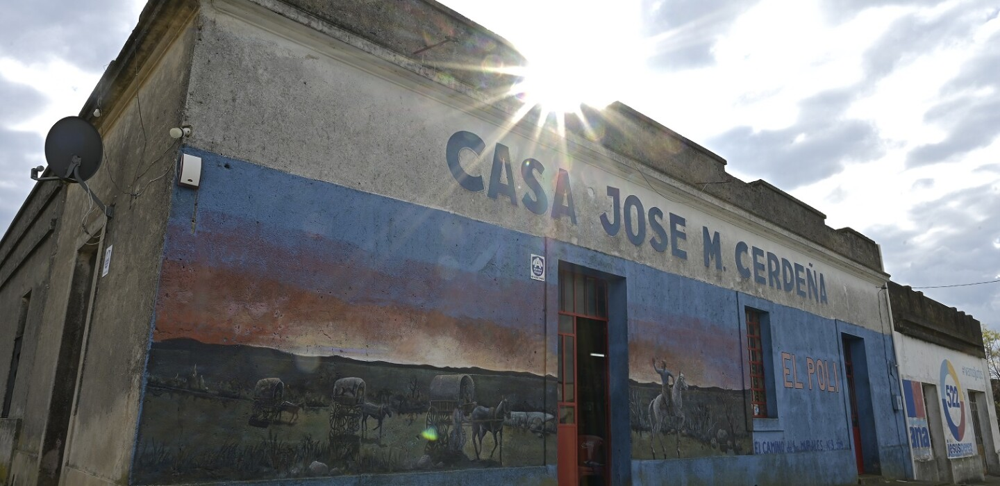
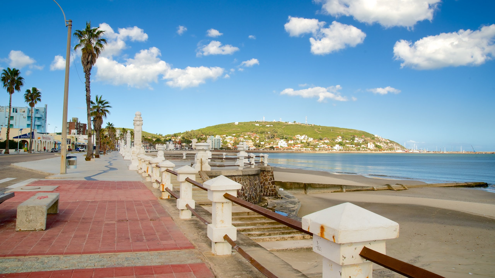
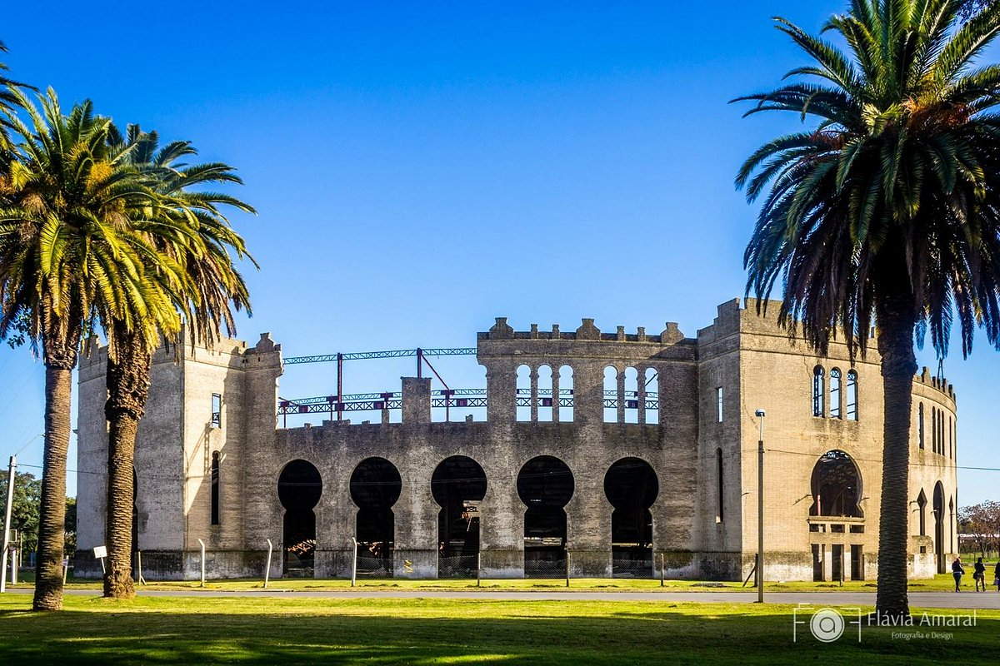
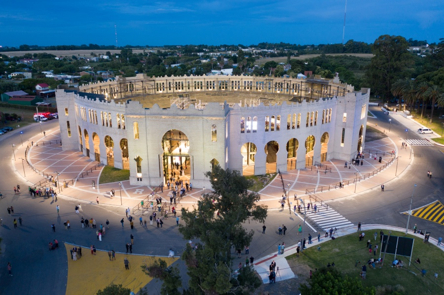
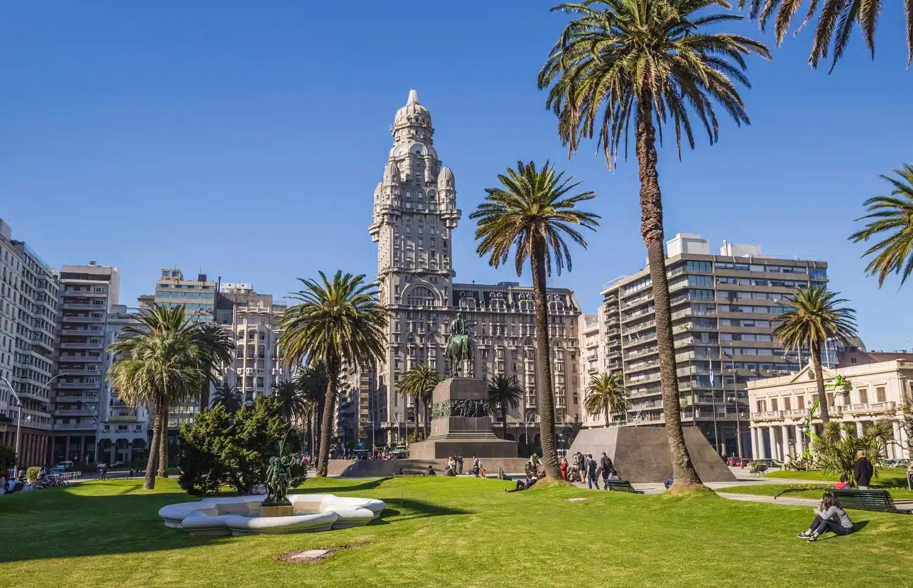
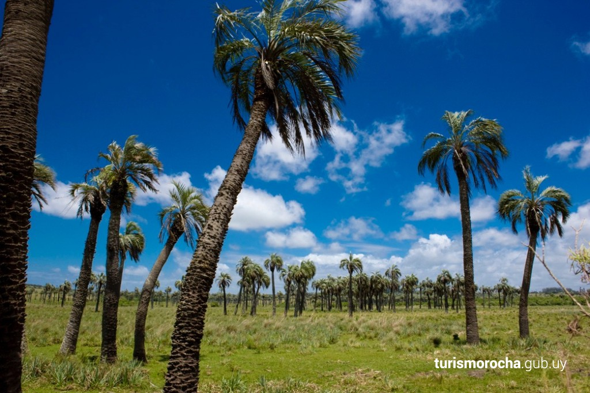
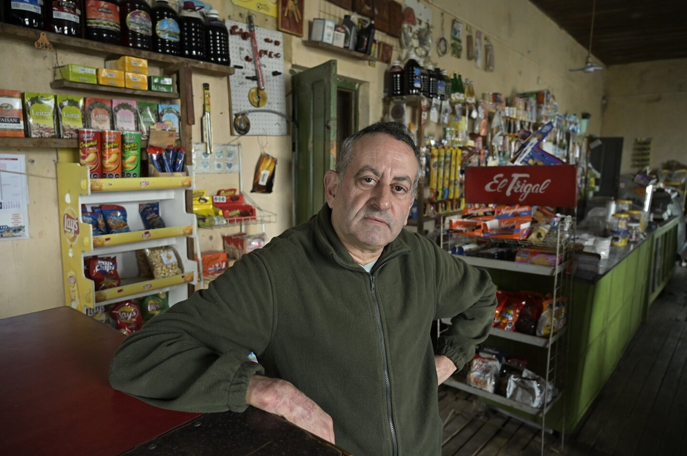
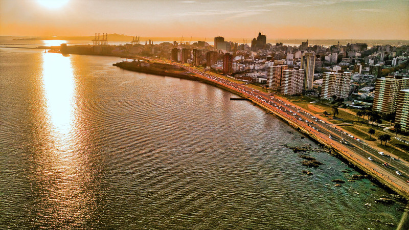

Best price
Best price
Offroad 200
A motorcycle designed for off-road lovers. Equipped with big racks for dry packs.
from $38 /day

Tips from a local: what to see, what to do and how to get on the road.
What can I say about this country? As a Uruguayan myself, I can most definitely say that upon arrival, this country instantly sets itself apart to any avid observer: take in the sights, the colonial architecture or our vast and rich countryside, which is the lifeblood of our society. One thing's for sure, there won't be any doubt this place has a unique identity and is on a level all of its own.
All who set but an inch of a foot in this country will taste the coastal winds of our beautiful beaches, the view of the harbor and the sprawling Río de la Plata, which leads into the South Atlantic Ocean.
Now, if it's the first time you're coming here, you might be wondering what there is to do, where should I go? Well, thanks for asking, I'm glad to answer those questions. If I came here I would definitely visit the Mercado del Puerto (Harbor Market) to get acquainted with the local cuisine, as well as swapping a few glances with other travelling folk and realizing: hey, you're not alone here.
After that, there's a variety of things to do in the city itself, too many to list in fact, but I'll give you a couple of my favorites to get you started. As an acting enthusiast I always enjoy going to a play in Teatro Solís, the oldest theatre in South America by the way, and also visiting the Old Town, a district where the remains of the colonial period of Montevideo are located. It's a vestige of a bygone era that you can explore at your own pace, with cultural museums and monuments that date back a couple hundred years.
For more sports-oriented people, there's everything from trekking and rappelling to kayaking and mountain biking. Uruguay offers a variety of such activities in places like Maldonado, Canelones, Lavalleja, Colonia and, again, Montevideo. But what connects all these different departments of the country? Miles and miles of unadulterated, green and plain countryside, with an ever-modernizing road from which you can see natural vistas, animals roaming about and farmers doing their business.
Now, to get on the road one needs wheels, and what better place to get a set of wheels than at the center of the country itself, in the thus far unmentioned department where our independence as a nation was ratified and declared? I present to you the department of Florida.
After flying to Uruguay, buses from Gabar, Núñez, Cita, Tupil or Nossar can take you from Terminal Tres Cruces (the capital city's bus station, shopping center and all-around hub of the country) straight to Florida city, where bikes are both easily and cheaply rented to embark on a road adventure of your own making. You rent the well-equipped bikes, you take them where you want, and forget about the hassles of gear acquisition and safety concerns. Just limit yourself to enjoying how good the wind feels on two trusty wheels that take you wherever you need, whenever you decide.
These are some highlights along the Uruguayan Discovery Trail, listed from west to east.











Best price
A motorcycle designed for off-road lovers. Equipped with big racks for dry packs.
 New arrival
New arrival
An enduro with quality components, built for adventure and adrenaline in nature and the city.
 Long trips
Long trips
A mid-size tourer at home on highways and country roads, and an excellent companion in the city.